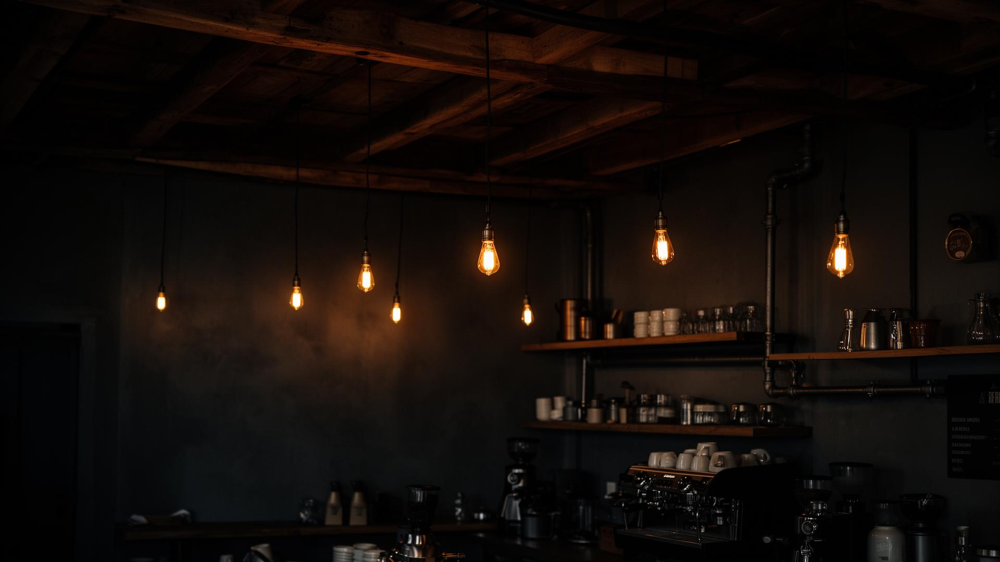

Chocolate Freezo
from R49Cold-blended, deep cocoa, ridiculous on a Tuesday.

◯ Est. Independent · Specialty Roasters
Dark walls, loud guitars, and coffee that actually does the job. Brewed for the people who don't do mornings halfway.
◯ Who We Are
An independent coffee shop built on great beans, loud playlists, and people who actually give a damn.
Single origin & house blends
If it's loud, it's playing
Warm. Honest. Caffeinated.
◯ The Lineup
Cold-blended, deep cocoa, ridiculous on a Tuesday.

Two ristretto shots, silky milk, no fluff.

Dark roast, thick crema, no apologies.
"Decided to give the burnout society a try this morning on my way to work and got their chocolate freezo and I couldn't be happier. Service was professional, barista was friendly and welcoming, the music was alternative rock so that gets bonus points from me. My freezo was really good and the place just has a really nice vibe overall."
"I cannot recommend this coffee shop enough to anyone and everyone. Honestly, the best experience and coffee I have ever had. Not only is the coffee and food absolute beyond scrumptious and mind blowing, the staff honestly have always made me feel so welcome. If you are helped by Ashleigh, she makes you feel like long lost friends and goes above and beyond. So if you're looking for the best coffee in town and could use a way to improve the morning gloom, this is definitely the place for you."
"I had an amazing experience at The Burnout Society, a place with a unique and welcoming vibe. The atmosphere is fantastic, with a really comfortable setting and the perfect energy to relax or spend time with friends."
"The best service I have experienced in a coffee shop, Eric and Thandi has really great personalities that just makes you want to buy coffee everyday of the week."
"My first time at TBS and I can already tell that I will keep going back. Amazing service from a very friendly barista with a great coffee and muffin to top it all off. I will be back!"